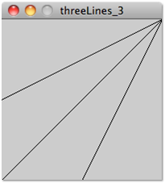
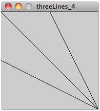
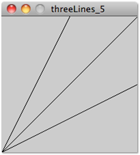
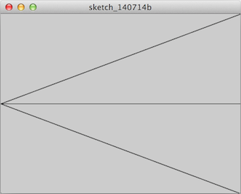
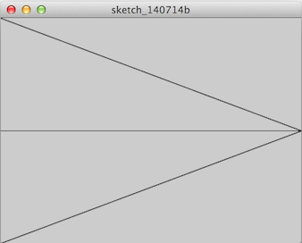

ÖzÜ Oyun Atölyesi
< Değişkenler Setup ve draw metodları >
Alıştırmalar II
Aşağıdaki şekli çizen bir Processing programı yazın. Çizgilerin koordinatlarını
widthveheightcinsinden belirleyin; öyle ki, boyutu değiştirseniz de başka bir değişiklik yapmanıza gerek olmadan benzer bir şekil oluşsun.
Yukarıdaki sorunun aynısını aşağıdaki resim ve kod için yanıtlayın.

Yukarıdaki sorunun aynısını aşağıdaki resim ve kod için yanıtlayın.

Aşağıdaki şeklin ortaya çıkması için
hdeğişkeninin değeri ne olmalı? Burada sol kenar üstündeki nokta tam orta noktasıdır.hdeğeriniwidthve/veyaheightcinsinden yazın; öyle ki, boyutu500,800yapsanız da başka bir değişiklik yapmanıza gerek olmadan benzer bir şekil oluşsun.
size(400,300); int h = ???; line(0, h, width, 0); line(0, h, width, height / 2); line(0, h, width, height);Cevap:
height/2Yukarıdaki sorunun aynısını aşağıdaki resim ve kod için yanıtlayın.

size(400,300); int h = ???; line(0, h - height, width, height / 2); line(0, h - height/2, width, height / 2); line(0, h, width, height / 2);Alıştırma: Parabol ve Alıştırmalar I bölümlerindeki alıştırmaları, koordinatları
widthveheightcinsinden tanımlayarak yapın. Öyle ki, pencerenizin boyutu değişirse, başka bir değişikliğe gerek kalmadan görüntü yeni pencere boyutuna göre ölçeklensin. Örnek: